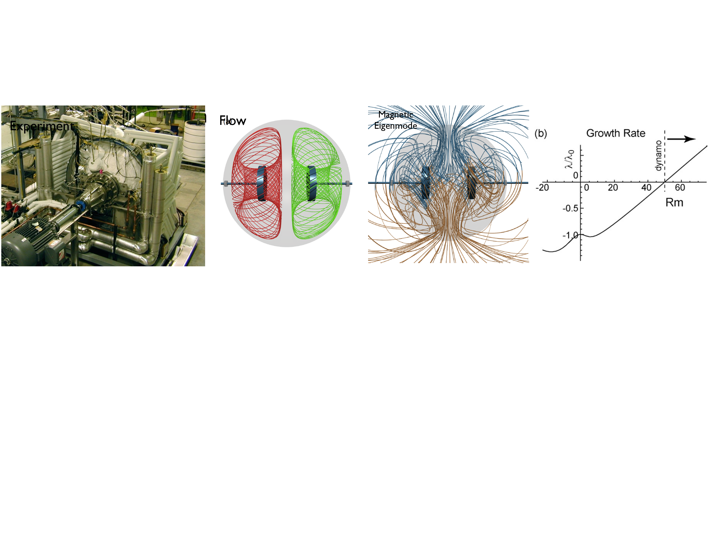
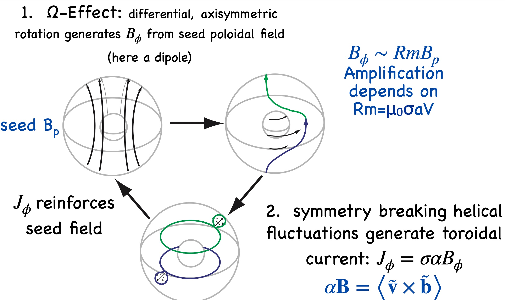

Why this lecture matters. A dynamo is not just “a magnetic field in motion.” It is a conducting flow that amplifies magnetic energy fast enough to outrun resistive diffusion. This lecture has four jobs:
- 1.
- restate the induction equation as an eigenvalue problem for magnetic growth;
- 2.
- show, with the algebra visible, how stretching competes with diffusion;
- 3.
- derive the axisymmetric flux-function equations and explain Cowling’s theorem; and
- 4.
- introduce the mean-field \(\alpha \)–\(\Omega \) closure that reopens the door once strict axisymmetry is relaxed.
In the Lectures 8, 9 and 19 the presence of a magnetic field is taken as given for each astrophysical geometry presenting a "chicken-and-egg" dilemma which is the topic of this lecture.
Persistent planetary and stellar magnetic fields are the classical evidence that conducting flows can do more than passively advect flux. Left to itself, the magnetic field would decay on the resistive time \(\tau _\lambda \sim L^2/\lambda \), where \[ \lambda \equiv \frac {\eta }{\muo } = \frac {1}{\muo \sigma } \] is the magnetic diffusivity associated with the resistive Ohm’s law (1.9). Yet the Earth, the Sun, and many laboratory flows sustain magnetic structure far longer than that. The central question of dynamo theory is therefore precise: can the inductive term in (1.13) create magnetic energy faster than diffusion destroys it?
Larmor’s 1919 proposal that solar magnetism might be self-excited by fluid motion posed the right question before the mathematical tools were ready [Larmor, 1919]. Cowling’s anti-dynamo theorem then supplied an equally important negative result: strict axisymmetry cannot do the job [Cowling, 1933]. Very quickly, however, it became clear that anti-dynamo theorems were not the end of the story but a clue about what a successful flow must actually do.
Vainshtein and Zel’dovich’s stretch–twist–fold picture isolated the topological core of fast dynamo action: stretch a flux tube to amplify \(B\), twist it so like-signed flux can be brought together rather than cancelled, and fold it back into the original volume so the process can repeat [Vainshtein and Zeldovich, 1972, Moffatt, 1989]. Childress and Gilbert later turned that cartoon into a full language for fast dynamos [Childress and Gilbert, 1995]. In parallel, Bullard and Gellman translated the kinematic problem into a practical spectral calculation in spherical geometry [Bullard and Gellman, 1954], Dudley and James showed that smooth flows in a sphere can realize the same logic without literal folded ropes [Dudley and James, 1989], and Parker introduced the mean-field \(\alpha \) effect that closes the loop for stars [Parker, 1955]. Liquid-metal experiments then demonstrated that self-excitation is not merely astrophysical rhetoric, while simultaneously forcing everyone to confront threshold, saturation, symmetry breaking, and turbulence as dynamo problems in their own right [Stieglitz and Müller, 2001, Müller et al., 2008, Monchaux et al., 2007, Spence et al., 2005, Nornberg et al., 2006].
Induction equation and the eigenvalue viewpoint. We start from the induction equation derived in the introduction, Eq. (1.13):
It is useful to compare the advective time and the resistive time: \[ \tau _u \sim \frac {L}{U}, \qquad \tau _\lambda \sim \frac {L^2}{\lambda }, \qquad \mathrm {Rm}\equiv \frac {\tau _\lambda }{\tau _u} = \frac {UL}{\lambda }. \] Large \(\mathrm {Rm}\) is the regime in which advection dominates diffusion and the field is approximately frozen to the flow in the sense of (4.13). Equation (4.7) already showed that the field is stretched by velocity gradients when diffusion is weak. But flux freezing alone does not guarantee growth. A dynamo needs a velocity field that repeatedly stretches and reorients the field, not just one that carries it around.
Why stretching matters: the magnetic-energy equation. The algebra becomes much clearer if we expand the induction term. Using the identity \[ \curl (\uvec \times \B ) = \uvec (\divergence \B ) - \B (\divergence \uvec ) + (\B \cdot \grad )\uvec - (\uvec \cdot \grad )\B , \] and imposing \(\divergence \B =0\), we obtain
Large \(\mathrm {Rm}\)is necessary, not sufficient. Equation (10.14) says that magnetic energy grows only if the field samples a velocity gradient with the right geometry. Two-dimensional stirring, purely axisymmetric motion, or motions with the wrong symmetry can have very large \(\mathrm {Rm}\) and still fail as dynamos. In the large-\(\mathrm {Rm}\) limit, growth typically proceeds by stretching the field to small scales until the weak diffusion neglected in (4.8) becomes important again.
Stretch–twist–fold as the irreducible cartoon. The most compact way to see why stretching matters is to compare magnetic evolution with the evolution of a material line element. In ideal incompressible MHD, (10.6) reduces to
Now take an incompressible flux tube of length \(L\), cross-sectional area \(A\), and magnetic flux \(\Phi = BA\). If the
flow stretches the tube to a new length \(L'=\alpha L\) while approximately conserving volume, then \[ A' L' = A L \qquad \Rightarrow \qquad A'=\frac {A}{\alpha }. \] Flux
freezing says \(\Phi '=\Phi \), so \[ B' A' = B A \qquad \Rightarrow \qquad B' = \alpha B . \] This is the first step of the Zel’dovich cartoon:
A smooth realization of stretch–twist–fold: the Dudley–James flow. Bullard and Gellman introduced the toroidal–poloidal decomposition that makes spherical kinematic calculations practical [Bullard and Gellman, 1954]. Any solenoidal field can be written as
Dudley and James identified especially simple flows in a sphere that excite magnetic modes at comparatively low \(\mathrm {Rm}\) [Dudley and James, 1989, O’Connell et al., 2001]. Their \(T2S2\) flow is built from \(\ell =2\) toroidal and poloidal pieces,
A convenient choice of radial profiles is
These flows are useful because one can see, almost by inspection, the ingredients in (10.14): circulation stretches the field, toroidal motion twists it, and the combined three-dimensional geometry allows folding and reorientation instead of mere diffusion. Read in stretch–twist–fold language, the poloidal circulation supplies the repeated stretch-and-return of flux tubes while the toroidal component \(u_\phi \) supplies the twist that keeps the returned flux aligned rather than cancelled. Dudley and James are important because they show that the Zel’dovich cartoon is not confined to discrete maps or knotted ropes. A smooth, divergence-free flow in an ordinary sphere can realize the same topology continuously.
Experimental perspective. Kinematic calculations mattered enormously for experiment because liquid-sodium facilities cannot reach arbitrarily large \(\mathrm {Rm}\). The flow has to be engineered to sit near threshold as efficiently as possible, but there are very different ways to do that. Karlsruhe deliberately realized a Roberts-type two-scale dynamo with helical channels, so the experiment was almost a direct embodiment of a mean-field calculation [Stieglitz and Müller, 2001, Müller et al., 2008]. The Madison Dynamo Experiment pursued a different philosophy: approximate a smooth spherical two-vortex flow strongly enough that the predicted magnetic eigenmodes become experimentally relevant [Spence et al., 2005, Nornberg et al., 2006, Lathrop and Forest, 2011]. From that point of view, Madison sits much closer to the Dudley–James program than to the helical-pipe logic of Karlsruhe.

Field-Line Movie
Watch for the three-dimensional stretching and return of field structures that make the Madison flow a smooth laboratory analogue of stretch–twist–fold dynamics.
Movie clip associated with the Madison Dynamo Experiment discussion in this lecture.
The Dudley–James calculation and the Madison device therefore fit together naturally. The calculation says that a smooth spherical flow with the right mixture of meridional circulation and swirl can be a dynamo at achievable threshold. The experiment then asks whether a turbulent laboratory flow can stay close enough to that kinematic target for the corresponding magnetic eigenmode to emerge. In that sense Madison is not a separate story from stretch–twist–fold. It is an attempt to realize a smooth three-dimensional stretch–twist–fold surrogate in sodium rather than on a blackboard.
VKS adds yet another twist. It achieved self-excitation in a violently turbulent von Kármán flow [Monchaux et al., 2007], but later analysis showed that the observed axisymmetric mode and the dynamo threshold depended strongly on the magnetic permeability of the soft-iron impellers [Giesecke et al., 2010]. That is precisely why the experiment became interesting: not because one more kinematic threshold had been crossed, but because turbulence, symmetry breaking, magnetic boundary conditions, and nonlinear saturation all became inseparable.
Karlsruhe and VKS were genuine milestones, and it would be silly to diminish the experimental ingenuity required to build them. But they were also highly constrained realizations of already-favored kinematic ideas. Karlsruhe hard-wired helicity through helical channels; VKS used impeller geometry and ferromagnetic material that strongly selected the observed mode. In that limited sense, once the flow topology and magnetic boundary conditions were engineered correctly, Maxwell’s equations had much less freedom than the word “dynamo” sometimes suggests.
From this point of view, the deepest discoveries were not merely that self-excitation could occur, but
how the system saturated ,how turbulence modified the mean electromotive force , andwhich magnetic symmetries survived the nonlinear state . Madison was especially valuable on that front because it lived close enough to threshold that intermittency, fluctuation-driven induction, and turbulent transport became part of the physics rather than just noise around a predetermined outcome.
The Stokes function in axisymmetry. Many geophysical and astrophysical systems are approximately axisymmetric, so it is natural to ask whether axisymmetry by itself can maintain a magnetic field. In cylindrical coordinates \((r,\phi ,z)\) with \(\pp {}{\phi }=0\), write
so poloidal field lines lie on surfaces of constant \(\psi \).
Ampère’s law (1.11) gives the toroidal current associated with \(\psi \):
Derivation of the axisymmetric induction equations. The reason \(\psi \) is so useful is that the toroidal component of Ohm’s law immediately produces a scalar evolution equation. Start from (1.9), \[ \E + \uvec \times \B = \eta \J , \] and take the \(\phi \) component. Because \(\vect {A} = \psi \grad \phi = (\psi /r)\vect {e}_\phi \), axisymmetry gives
because \(\uvec _p\cdot \grad \phi =0\). Finally, from (10.32),
The toroidal field equation comes from the \(\phi \) component of the induction equation. A useful intermediate form is
Omega-Effect Movie
Watch for how differential rotation shears poloidal structure into toroidal field, building the strong azimuthal component that drives the first half of the alpha-omega loop.
Movie clip paired with the toroidal-field induction and omega-effect discussion in this lecture.
Cowling’s theorem. Cowling’s theorem may now be stated in its physically useful form:
Cowling’s theorem. No purely axisymmetric flow can maintain a purely axisymmetric magnetic field against resistive decay.
The algebraic heart of the theorem is already visible in (10.38). The equation for \(\psi \) is homogeneous.
Axisymmetric motion can rearrange \(\psi \), and resistivity can dissipate it, but there is no term proportional to \(B\),
\(\Omega \), or any other axisymmetric quantity that
It is still worth seeing the dissipative sign directly. Multiply (10.38) by \(\psi /r^2\) and integrate over volume:
With homogeneous boundary data or sufficiently rapid decay at infinity, the surface terms vanish, and the resistive part is strictly non-positive. A mathematically complete proof must handle the transport term with the correct cylindrical weighting, but the physical conclusion is already fixed by (10.38): in strict axisymmetry there is diffusion of \(\psi \) and no source for \(\psi \). That is why an axisymmetric \(\Omega \) effect, by itself, never closes the loop.
Averaging and the turbulent electromotive force. The way out of Cowling’s theorem is not to deny it, but to relax strict axisymmetry. Write \[ \uvec = \overline {\uvec } + \widetilde {\uvec }, \qquad \B = \overline {\B } + \widetilde {\B }, \] where the overbar denotes an average over fluctuations and \(\langle \widetilde {\uvec } \rangle = \langle \widetilde {\B }\rangle = 0\). Averaging (10.2) gives
Alpha-Effect Movie
Watch for how helical motion converts toroidal structure back into poloidal flux, closing the regeneration loop sketched in the alpha-omega cartoon.
Movie clip paired with the alpha-effect and alpha-omega dynamo discussion in this lecture.
The axisymmetric \(\alpha \)–\(\Omega \) equations. Absorb \(\beta \) into an effective diffusivity \(\lambda _T = \lambda + \beta \), and keep only the dominant source terms. Then the axisymmetric mean-field equations become

A local \(\alpha \)–\(\Omega \) estimate. A simple local model makes the competition between induction and diffusion almost embarrassingly transparent. Let \(A(x,t)\) be a local toroidal vector potential so that the mean poloidal field is obtained from \(A\), and let \(B(x,t)\) be the mean toroidal field. Suppose the large-scale shear is \(G \equiv \dd {U_y}{x}\), and retain only one spatial coordinate. Then
This is the local seed of Parker’s dynamo-wave picture.
What to remember physically. The dynamo problem is not solved by one mechanism alone. Stretching without topology change piles field into ever smaller scales until diffusion wins. Diffusion without stretching simply erases the field. The classical success of mean-field theory was to show how symmetry-breaking fluctuations can systematically regenerate the large-scale part of the field while shear builds strong toroidal components. Whether that closure is quantitatively adequate is a separate, harder question, but the architecture of the problem is already visible in (10.48) and (10.49).
- 1.
- The kinematic dynamo problem is the eigenvalue problem (10.4): can induction overcome diffusion for a prescribed flow?
- 2.
- The magnetic-energy balance (10.14) and the line-element equation (10.16) show exactly what growth requires: stretching must beat Joule dissipation, while twisting and folding prevent the amplified flux from cancelling itself.
- 3.
- The stretch–twist–fold cartoon is the minimal topological logic of a fast dynamo; Dudley–James flows show how that same logic appears in smooth spherical advection, and Madison was built to chase that smooth version experimentally.
- 4.
- In axisymmetry, the poloidal flux equation (10.38) contains advection and diffusion but no source. That is the operational content of Cowling’s theorem.
- 5.
- The mean-field \(\alpha \)–\(\Omega \) model reintroduces a source for poloidal flux through the turbulent EMF \(\mathcal {E}=\langle \widetilde {\uvec }\times \widetilde {\B }\rangle \), leading to (10.48)–(10.49).
J. Larmor. Possible rotational origin of magnetic fields of sun and earth.
T. G. Cowling. The magnetic field of sunspots.
S. I. Vainshtein and Ya. B. Zeldovich. Origin of magnetic fields
in astrophysics (turbulent "dynamo" mechanisms).
H. K. Moffatt. Stretch, twist and fold.
Stephen Childress and Andrew D. Gilbert.
Edward Crisp Bullard and H. Gellman. Homogeneous dynamos and terrestrial magnetism.
M. L. Dudley and Reginald William James. Time-dependent kinematic dynamos with
stationary flows.
E. N. Parker. Hydromagnetic dynamo models.
Robert Stieglitz and Ulrich Müller. Experimental demonstration of a homogeneous two-scale
dynamo.
Ulrich Müller, Robert Stieglitz, Fritz H. Busse, and Andreas Tilgner. The karlsruhe two-scale
dynamo experiment.
Romain Monchaux, Michael Berhanu, Mickael Bourgoin, et al. Generation of a magnetic field
by dynamo action in a turbulent flow of liquid sodium.
E J Spence, M D Nornberg, C M Jacobson, R D Kendrick, and C B Forest. Observation
of a turbulence-induced large scale magnetic field.
M D Nornberg, E J Spence, R D Kendrick, C M Jacobson, and C B Forest. Intermittent
magnetic field excitation by a turbulent flow of liquid sodium.
R. O’Connell, Roch Kendrick, Mark Nornberg, Erik Spence, Adam Bayliss, and C. B.
Forest. On the possibility of an homogeneous MHD dynamo in the laboratory. In P. Chossat,
D. Ambruster, and I. Oprea, editors,
Daniel P. Lathrop and Cary B. Forest. Magnetic dynamos in the lab.
André Giesecke, Frank Stefani, and Günter Gerbeth. Role of soft-iron impellers on the mode
selection in the von kármán-sodium dynamo experiment.
Kian Rahbarnia, Benjamin P Brown, Mike M Clark, Elliot J Kaplan, Mark D Nornberg,
Alex M Rasmus, Nicholas Zane Taylor, Cary B Forest, Frank Jenko, Angelo Limone,
Jean-François Pinton, Nicolas Plihon, and Gautier Verhille. Direct observation of the turbulent
EMF and transport of magnetic field in a liquid sodium experiment.